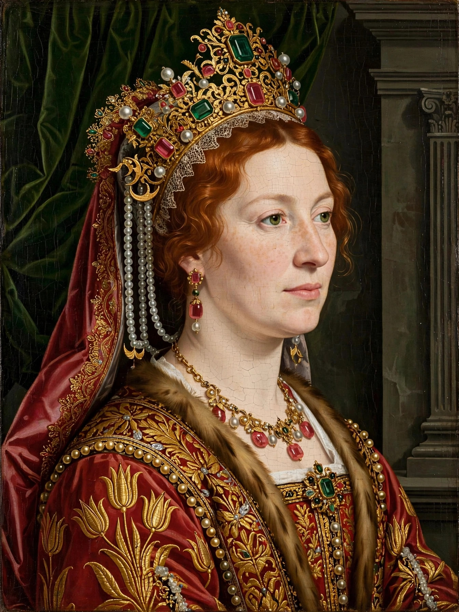

Roxelana (c. 1504 – 15 April 1558), known in Ottoman Turkish as Hürrem Sultan, was the chief consort and legal wife of the Ottoman sultan Suleiman the Magnificent. Born in Ruthenia (in present-day Ukraine), she was captured by Crimean Tatar raiders and brought to Constantinople, where she rose from slavery in the imperial harem to become one of the most powerful and influential women in Ottoman history — the first great figure of the period historians call the Sultanate of Women.
| Hürrem Sultan (Roxelana) | |
|---|---|
 Roxelana, Hürrem Sultan | |
| Born | c. 1504, probably Rohatyn, Ruthenia |
| Died | 15 April 1558, Constantinople |
| Spouse | Suleiman the Magnificent |
| Issue | Şehzade Mehmed, Mihrimah Sultan, Selim II, Şehzade Bayezid, Şehzade Cihangir |
| Title | Haseki Sultan |
Her birth name is uncertain — later tradition gives Alexandra or Anastasia Lisowska. Taken in a Tatar raid on her father's town (he is said to have been an Orthodox priest), she entered the Topkapı harem around 1520. Her cheerfulness earned her the name Hürrem, "the Joyful One"; in Europe she was called Roxelana, "the Ruthenian". Suleiman broke two centuries of custom for her: he freed and legally married her around 1533/34, created for her the title Haseki Sultan, and kept her at court in the capital rather than sending her to a provincial governorship with her sons.
Hürrem corresponded with foreign rulers, including Sigismund II Augustus of Poland, advised the sultan, and received ambassadors' reports with close attention. She was a great patron of architecture and charity, commissioning from Mimar Sinan the Haseki Sultan Complex in Istanbul (mosque, hospital, soup kitchen) and charitable foundations in Mecca, Medina and Jerusalem. Rivals blamed her for the execution of Grand Vizier Ibrahim Pasha (1536) and of Suleiman's eldest son Mustafa (1553), though the evidence of her direct responsibility is disputed. She died in 1558 and was buried in a mausoleum beside the Süleymaniye Mosque, followed eight years later by Suleiman himself; her son reigned as Selim II.
Suleiman the Magnificent · Mimar Sinan · Ottoman Empire · Sultanate of Women